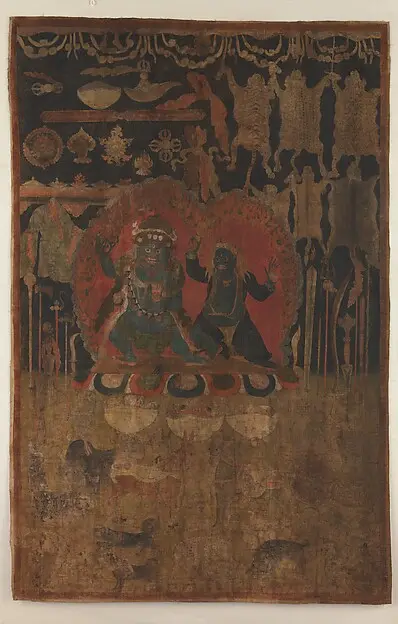
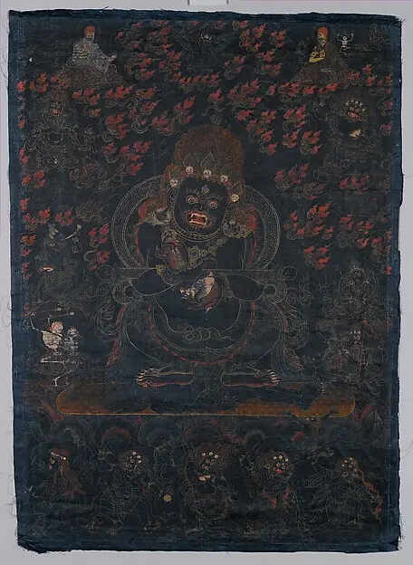
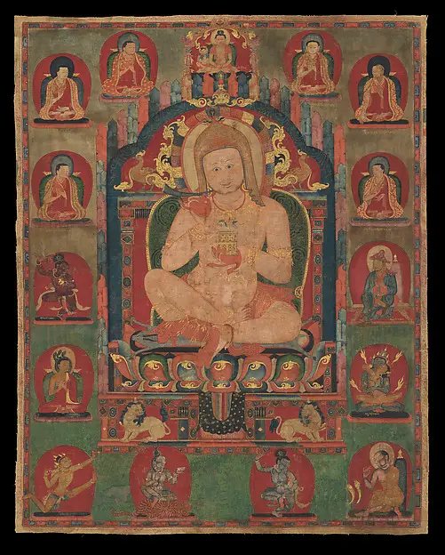
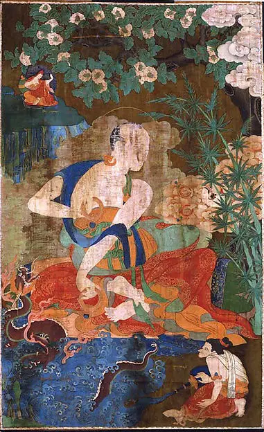
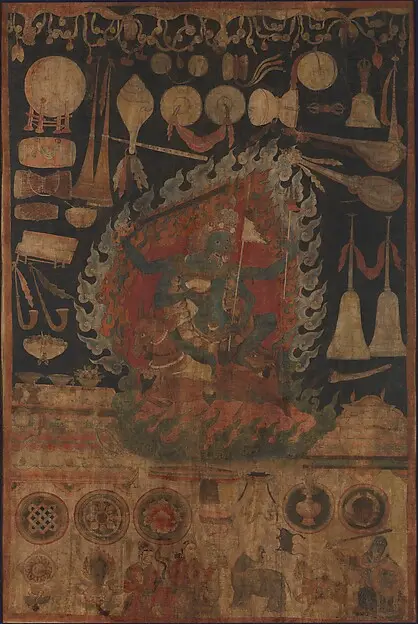
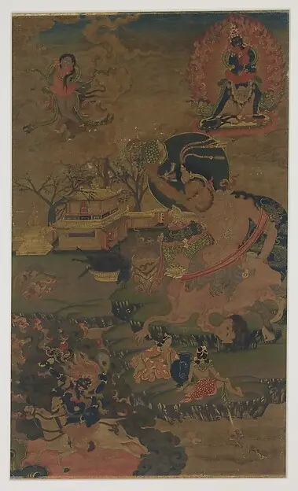
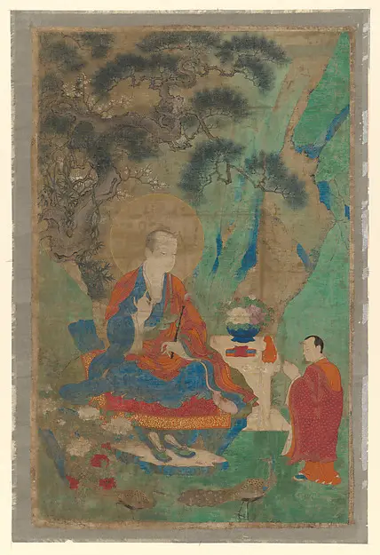
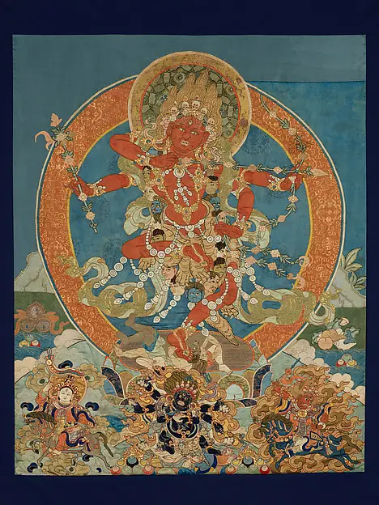
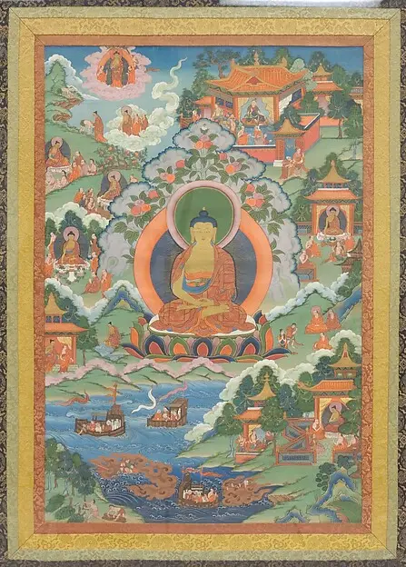

The reference collection
These historical paintings, released into the public domain by The Metropolitan Museum of Art, are the works we keep coming back to when we write about technique. None of them is for sale; they are here to look at.

How to use this page
Each painting below shows something specific about craft: a dark ground that makes gold glow, a landscape painted with real depth, or a figure built on careful proportions. Open the images large on a desktop screen and look for the details mentioned in each caption.







